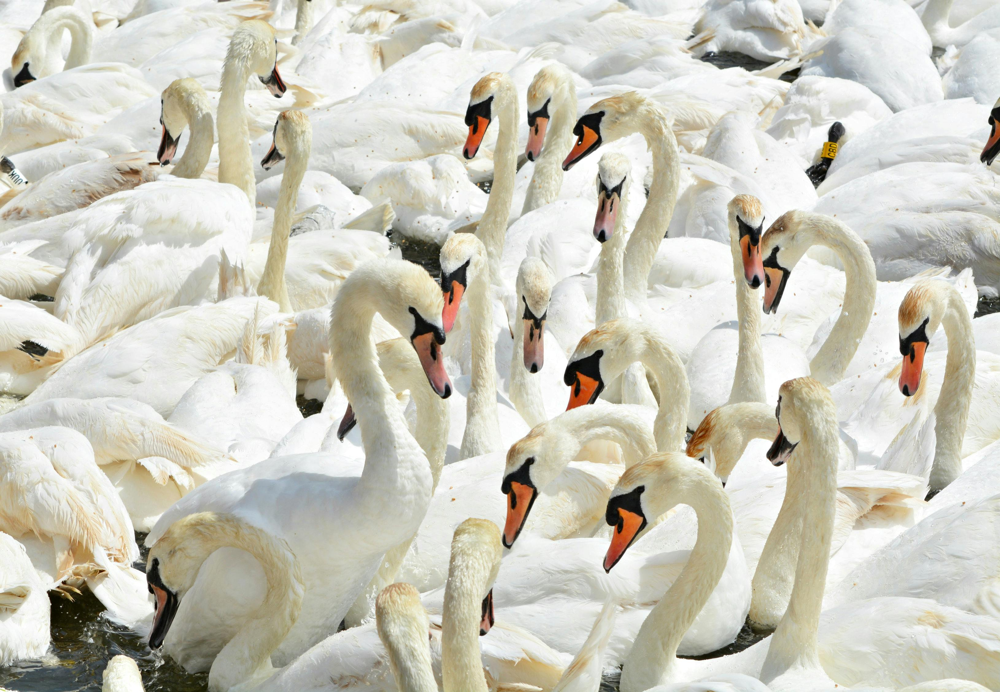
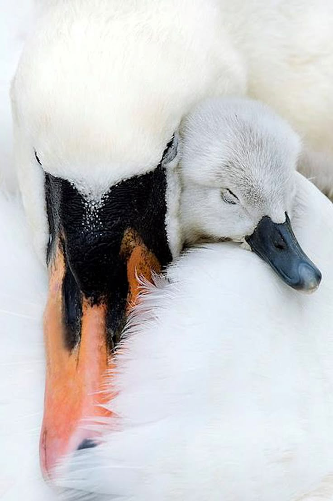
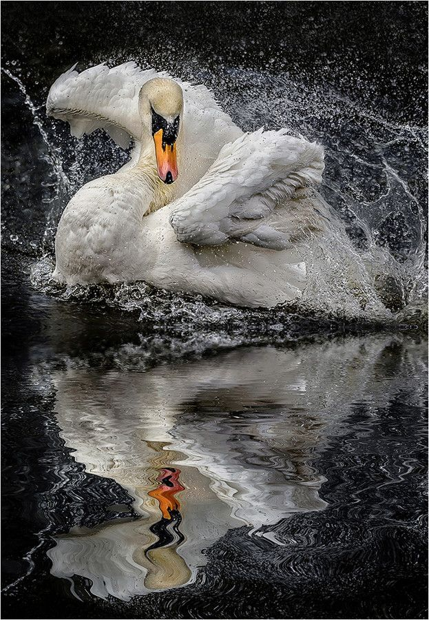

Κύκνοι:Κομψότητα στη Φύση
Οι κύκνοι είναι μεγάλα, κομψά υδρόβια πουλιά με μακρύ λαιμό και εντυπωσιάκή εμφάνιση.Ζουν κυρίως σε λίμνες,ποτάμια και υγρότοπους,όπου τρέφονται με υδρόβια φυτά και μικρούς οργανισμούς.Είναι γνωστοί για την ήρεμη συμπεριφορά τους και συχνά σχηματίζουν σταθερά ζευγάρια,γι'αυτό συμβολίζουν αγάπη και αφοσίωση.



Οι κύκνοι ζουν κυρίως σε γλυκά νερά,όπως λίμνες και ήρεμα ποτάμια,όπου βρίσκουν άφθονη τροφή με ασφάλεια.Κατασκευάζουν τις φωλιές τους κοντά στο νερό και φροντίζουν με προσοχή τα μικρά τους.Η δυνατή οικογενειακή τους συμπεριφορά και η ήρεμη κίνηση τους στο νερό τους κάνουν ένα απο τα πιο αγαπητά πουλιά της φύσης.